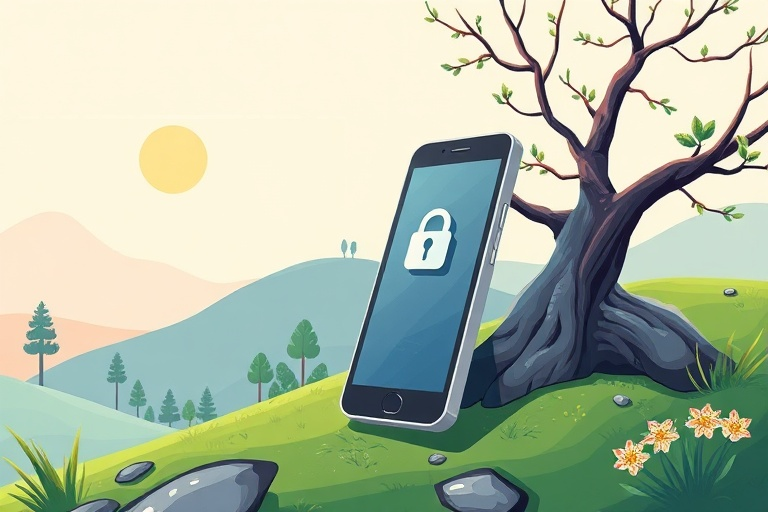

অ্যান্ড্রয়েড স্মার্টফোনের গতি বৃদ্ধি এবং ব্যক্তিগত গোপনীয়তা রক্ষার সহজ নির্দেশিকা
Category: mobile | Language: bn
স্মার্টফোন বর্তমানে আমাদের দৈনন্দিন জীবনের এক অপরিহার্য অংশ হয়ে দাঁড়িয়েছে। তবে সঠিক ব্যবহারের নিয়ম না জানায় অনেক সময় ফোন স্লো হয়ে যায় অথবা ব্যবহারকারীর ব্যক্তিগত তথ্য ঝুঁকির মুখে পড়ে। এই নিবন্ধটি মূলত সেই সমস্ত নতুন ব্যবহারকারীদের জন্য লেখা হয়েছে যারা তাদের অ্যান্ড্রয়েড ফোনের পারফরম্যান্স উন্নত করতে চান এবং ডিজিটাল নিরাপত্তা নিয়ে চিন্তিত। এখানে আমরা সহজ ভাষায় আলোচনা করব কীভাবে ফোনের সেটিংস পরিবর্তন করে আপনি একটি সুরক্ষিত এবং দ্রুতগতির অভিজ্ঞতা পেতে পারেন। মনে রাখবেন, বিভিন্ন কোম্পানির ফোন (যেমন স্যামসাং, শাওমি বা রিয়েলমি) এবং অ্যান্ড্রয়েড ভার্সন অনুযায়ী সেটিংসের নাম কিছুটা আলাদা হতে পারে, তবে মূল কাজগুলো সব ফোনেই প্রায় এক।
ফোনের গতি কমে যাওয়ার প্রধান কারণ হলো স্টোরেজ বা মেমোরি পূর্ণ হয়ে যাওয়া। ফোনের জায়গা খালি করতে আপনি 'Files by Google' অ্যাপটি ব্যবহার করতে পারেন অথবা ফোনের সেটিংসে গিয়ে 'Storage' অপশনটি দেখতে পারেন। অপ্রয়োজনীয় অ্যাপ ডিলিট করার পাশাপাশি বিভিন্ন অ্যাপের 'Cache' বা অস্থায়ী ফাইল নিয়মিত পরিষ্কার করা উচিত। উদাহরণস্বরূপ, যদি আপনার ফেসবুক বা ইনস্টাগ্রাম অ্যাপটি খুব ধীরে কাজ করে, তবে সেটিংসে গিয়ে ওই অ্যাপের 'Clear Cache' বাটনে ক্লিক করলে সাময়িকভাবে অনেক জায়গা খালি হয় এবং ফোন দ্রুত কাজ করতে শুরু করে। তবে ভুল করে 'Clear Data' দেবেন না, কারণ এতে আপনার লগ-ইন তথ্য মুছে যেতে পারে।
ব্যাটারির আয়ু বাড়ানো এবং ফোনকে অতিরিক্ত গরম হওয়া থেকে রক্ষা করা খুবই জরুরি। ফোনের ডিসপ্লে সেটিংস থেকে 'Dark Mode' চালু করলে ব্যাটারি খরচ অনেকটা কমে যায়, বিশেষ করে যদি আপনার ফোনে অ্যামোলেড স্ক্রিন থাকে। এছাড়া 'Adaptive Battery' ফিচারটি চালু রাখলে ফোন নিজে থেকেই বুঝে নেয় কোন অ্যাপগুলো আপনি কম ব্যবহার করেন এবং সেগুলোর ব্যাকগ্রাউন্ড অ্যাক্টিভিটি কমিয়ে দেয়। একটি বাস্তব টিপস হলো, ফোনের চার্জ সবসময় ২০ শতাংশ থেকে ৮০ শতাংশের মধ্যে রাখার চেষ্টা করুন। সারারাত ফোন চার্জে বসিয়ে রাখা ব্যাটারির দীর্ঘমেয়াদী স্বাস্থ্যের জন্য ক্ষতিকর হতে পারে।
প্রাইভেসি বা ব্যক্তিগত গোপনীয়তা রক্ষার জন্য 'App Permissions' বা অ্যাপের অনুমতি নিয়ন্ত্রণ করা সবথেকে গুরুত্বপূর্ণ পদক্ষেপ। অনেক সময় দেখা যায় একটি সাধারণ ক্যালকুলেটর অ্যাপ আপনার ফোনের গ্যালারি বা কন্টাক্ট লিস্টের পারমিশন চাইছে, যা মোটেও স্বাভাবিক নয়। ফোনের Settings > Privacy > Permission Manager-এ গিয়ে নিয়মিত পরীক্ষা করুন কোন অ্যাপ আপনার ক্যামেরা, মাইক্রোফোন বা লোকেশন ব্যবহার করছে। অপ্রয়োজনীয় মনে হলে সাথে সাথে সেই পারমিশন বন্ধ করে দিন। আধুনিক অ্যান্ড্রয়েড ফোনে 'Approximate Location' দেওয়ার অপশন থাকে, যা ব্যবহার করলে অ্যাপ আপনার সঠিক অবস্থান জানতে পারবে না।
ইন্টারনেট ব্যবহারের সময় ডাটা খরচ কমানো এবং সিকিউরিটি বজায় রাখতে ব্যাকগ্রাউন্ড ডাটা বন্ধ রাখা উচিত। অনেক অ্যাপ আপনি ব্যবহার না করলেও ইন্টারনেটের মাধ্যমে তথ্য আদান-প্রদান করতে থাকে। এটি বন্ধ করতে Settings > Connections > Data Usage-এ গিয়ে 'Background Data' অপশনটি অফ করে দিন। এছাড়া গুগল প্লে স্টোরে থাকা 'Play Protect' অপশনটি সবসময় চালু রাখুন। এটি নিয়মিত আপনার ফোনের অ্যাপগুলো স্ক্যান করে দেখে যে কোনো ক্ষতিকারক বা ম্যালওয়্যার যুক্ত অ্যাপ আছে কি না। অপরিচিত কোনো ওয়েবসাইট থেকে সরাসরি APK ফাইল ডাউনলোড করে ইনস্টল করা এড়িয়ে চলুন, কারণ এতে ভাইরাস থাকার সম্ভাবনা থাকে।
ফোনের আসক্তি কমাতে এবং মানসিক স্বাস্থ্যের দিকে নজর দিতে অ্যান্ড্রয়েডের 'Digital Wellbeing' ফিচারটি দারুণ কার্যকর। এখানে আপনি দেখতে পাবেন সারাদিনে কোন অ্যাপে কতক্ষণ সময় কাটিয়েছেন এবং কতবার ফোন আনলক করেছেন। আপনি চাইলে নির্দিষ্ট অ্যাপের জন্য 'App Timer' সেট করতে পারেন, যাতে সেই সময় পার হয়ে গেলে অ্যাপটি ওই দিনের জন্য বন্ধ হয়ে যায়। এছাড়া 'Focus Mode' ব্যবহার করে কাজের সময় বা পড়াশোনার সময় বিরক্তিকর নোটিফিকেশন আসা বন্ধ রাখা যায়। এটি আপনাকে আপনার সময়ের ওপর নিয়ন্ত্রণ পেতে সাহায্য করবে এবং ফোনের ব্যাটারিও সাশ্রয় করবে।
স্মার্টফোন সুরক্ষিত রাখার জন্য সফটওয়্যার আপডেট করা অত্যন্ত প্রয়োজনীয়। অনেকেই ইন্টারনেটের খরচ বাঁচাতে বা অলসতা করে সিস্টেম আপডেট এড়িয়ে যান। এটি একটি বড় ভুল। প্রতিটি আপডেটে কোম্পানিগুলো নতুন ফিচারের পাশাপাশি 'Security Patch' পাঠায় যা হ্যাকারদের হাত থেকে আপনার ফোনকে রক্ষা করে। আপনার ফোনের Settings > Software Update-এ গিয়ে নিয়মিত চেক করুন কোনো নতুন আপডেট এসেছে কি না। বিশেষ করে ব্যাংকিং অ্যাপ বা ব্যক্তিগত তথ্য যারা ফোনে রাখেন, তাদের জন্য লেটেস্ট সিকিউরিটি প্যাচ থাকা বাধ্যতামূলক। একটি পুরনো অপারেটিং সিস্টেম সহজেই সাইবার আক্রমণের শিকার হতে পারে।
পরিশেষে বলা যায়, ফোনের সুরক্ষা এবং গতি বজায় রাখা খুব একটা কঠিন কাজ নয় যদি আপনি সচেতন থাকেন। অযথা ক্লিনার অ্যাপ বা ব্যাটারি সেভার অ্যাপ থার্ড পার্টি উৎস থেকে ডাউনলোড করবেন না, কারণ এগুলো উল্টে ফোনের ক্ষতি করে এবং বিজ্ঞাপন দেখায়। কোনো সন্দেহজনক লিঙ্কে ক্লিক করে ব্যক্তিগত তথ্য বা ওটিপি (OTP) কাউকে দেবেন না। আপনার পরবর্তী পদক্ষেপ হিসেবে এখনই ফোনের সেটিংস থেকে 'Permission Manager' চেক করুন এবং অপ্রয়োজনীয় অ্যাপগুলো আনইনস্টল করে দিন। একটি পরিষ্কার এবং গোছানো ফোন আপনাকে অনেক বেশি স্বাচ্ছন্দ্য দেবে।